Reflection on Semester 3
December 22, 2025
Given that this blog is coming to life on the first day of winter break, I find it fitting that my first post should be a reflection on the semester that just passed. I think I want to structure this post into sections that feel natural to me so here we go (lol ended up basically being months).
Move In/First Couple Weeks
I have a job on campus where I’m like basically an accountant and auditor of all student organizations and it’s been pretty fun working there, especially given all the new people I’ve met. But another cool thing it gave me was the ability to move in early for training. Did I have to move in early… no… but I was pretty bored at home ngl. Despite everyone flaming me for having a single with no ac, it wasn’t too hot and it was nice to have like my own space where I could come and go as I please. These first few weeks were super chill and it was cool talking with people who also moved in early like ben and uzochi (those who know about the tik toks with our tongues out). I also remember going to some goofy like BORG party or whatever and my boy carlos was always downed like fortnite. Here are pictures from him downed and work training (idk why i looked mad):

September?
While my memory isn’t amazing for dates ig, thankfully looking at my photos was a great tool for recollection. While september didn’t feel super eventful, it really was. With classes being super free, there was sm motion and fun hangouts. I hung out at my friend cate’s apartment, with patrick and his friends, tailgates with my business frat (spoiler alert, akpsi is gonna be in here a lot), SIF interviews, Akpsi rush, and sm more. One thing I took from this month that will be important going forward is my interest in what makes people good for certain roles. That sounds super vague but after now being on the other side of rushing, interviews for SIF and AKPsi, and seeing how my PC and sif class have integrated, its so weird trying to predict who would be a good fit for things. I think the ideal person has this one trait: love of the game. Love of the game is what makes you really push through hard times, keeps you devoted to learning, builds that drive to get better, and everyone loves someone who is passionate about something. But I digress. I enjoyed fam dinners, rush(even though talking sm was draining), hanging out with new ppl, and work. Here are more pictures (chopped cheese in ethan’s apartment had to be included):
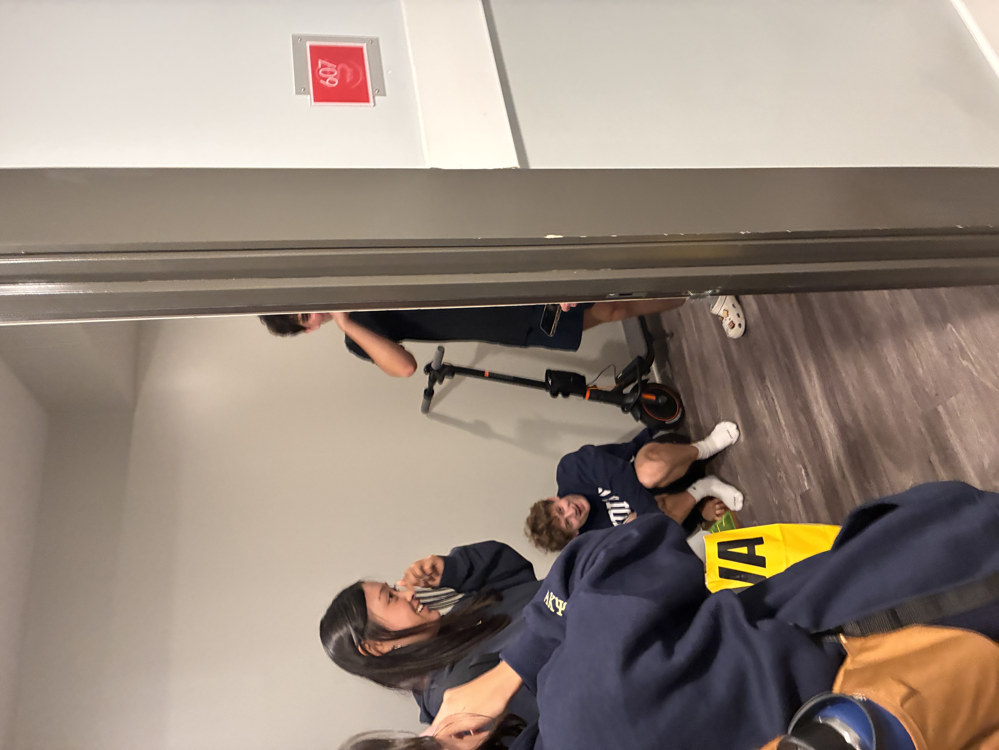
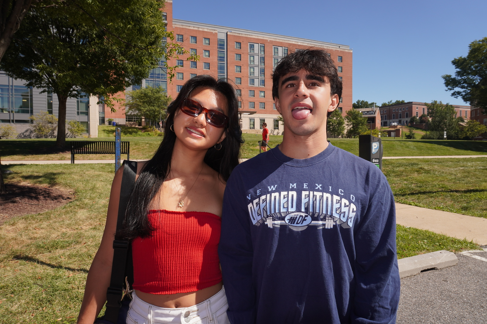

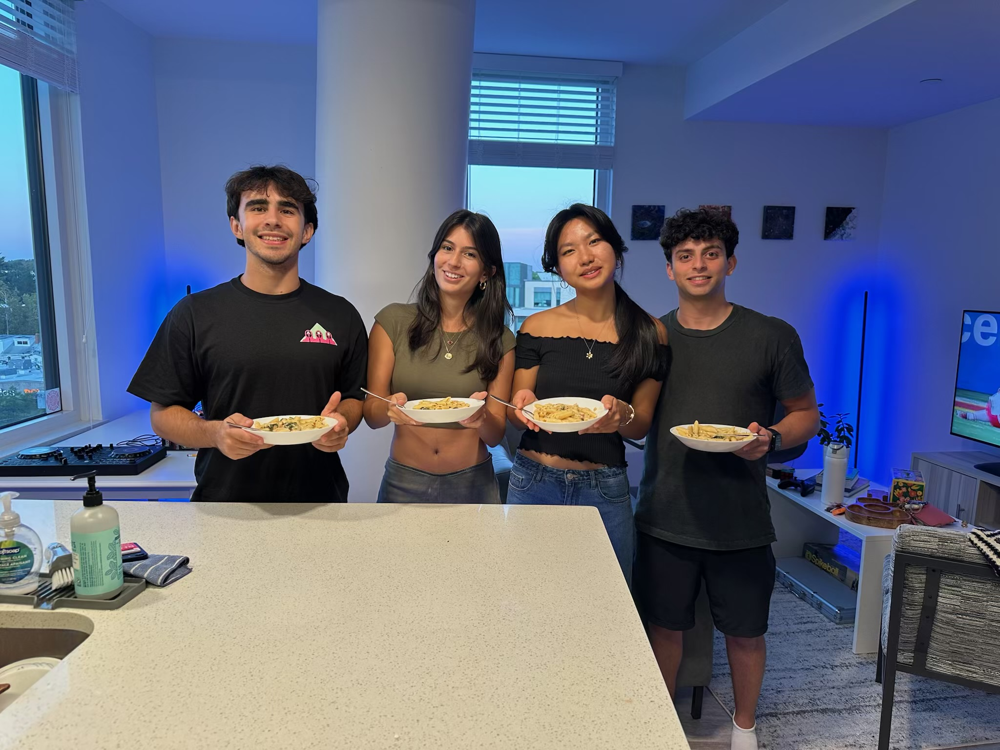
OCTOBER!
Idk looking at all the picture and even just thinking about it, october was a straight banger. Sm motion, wasn’t really overwhelmed with anything for school or club or whatever, went to NYC, hiked, and got to use my zoom-in lens on campus for some photography. Wow even in that list I forgot things like retreat, boiler room, bar crawl, halloween, DC/georgetown with pat, gurtle with jj, like wow this month had it all. Halloween i was peter griffin and yes it was a lazy costume but yk what, it was funny and ben was also peter. I was also goku. YO and semi was during october wowwwwww. Here are some pictures there are just too many good things to even talk about:

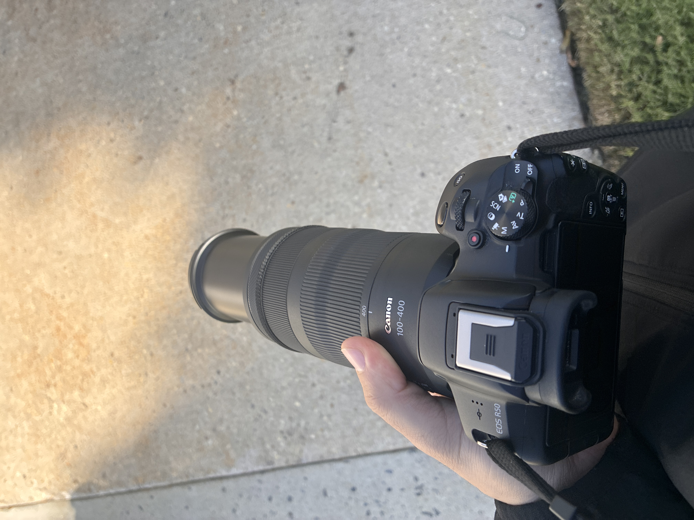
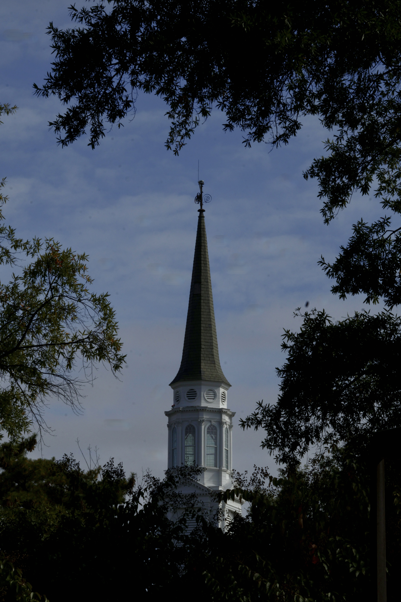
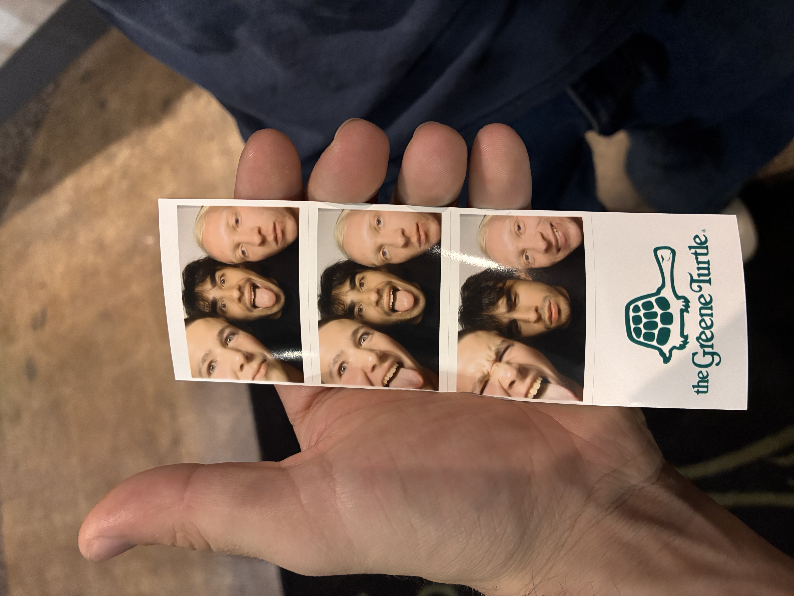


 Lol ben hit his nuts
Lol ben hit his nuts
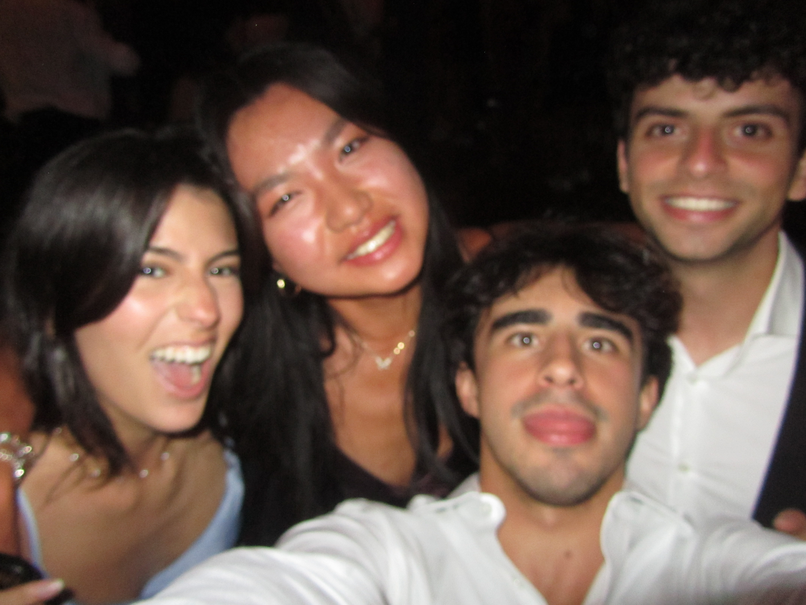

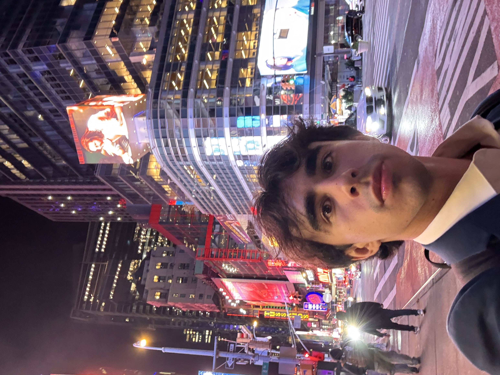
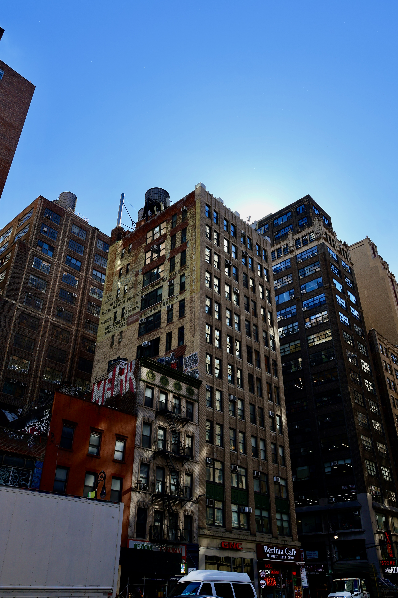
I guess I should talk about NYC a bit. I had never been before and while we did go to much nicer areas and I was only there for a few days, what an experience. I really enjoyed the hustle and bustle of it all and I could totally see myself starting my professional career here.

November.
I started writing about this part in a kinda hater way. I was going to say this was more of a mundane month and it wasn’t super enjoyable (bc there weren’t as many pictures as october) but after further reflection, I was wrong. This month was full of fun times and positive takeaways. School-wise I did well on all my exams (with mid terms 2 and 3 taking place during this month). I also became pretty competent with my work and hung out with my coworkers more. Some of the more “learning experience” type things that I got out of this month came from my workouts and a case comp I took part of. Starting with the workouts (or lack of them). I’ve found that whenever I get busy the gym or physical activity always is the first to get cut out. It’s really a shame and I am kinda sick of going through periods of intense focus and determination in the gym and then whenever I get busy to the point where I need to have a locked-in schedule, it’s almost like doing things that are good for my physical health are a waste of time and could be better spent elsewhere. But thats bs and I just need to keep my habits strong. I did switch out the gym for running which has been fun and it was easier because it takes less time but even that’s kinda coping. Anyways next thing, the case comp. I’m not really gonna talk about it but it was like an IB case comp and our model was insanely detailed and good, our whole team was locked in, no one made any error in the pitch, and we didn’t win. But this isn’t a like boo hoo we lost wahhh, we lost because (and fairly ig) but that our premium wasn’t high enough to justify a sale but its like yeah, because that doesn’t make any sense valuation wise (even when taking into account for like control premium and synergies, the company was pretty fairly valued at the time). So yeah whatever it bummed me out but ig it just cemented that i hate IB lol and that doing things like ER is much more interesting and like, rooted in actual analysis and not just like lying to your client lol. Ok now for fun stuff. Went on a hayride and had a huge bonfire with AKPsi and it was soooo fun and super peaceful. I also enjoyed doing the brother interviews with the pledges. Watched UFC with my friends from high school who I haven’t really seen much this sem. I also got a little. She is karina and she is super cool. She was such a good interview and I am glad shes part of Goswami. So yeah initiation was hella fun and I remained locked in enough to run the turkey trot the day after (somehow had a really good 5k time too despite… well pat knows). Thanksgiving/Fall break was sooo fun. Great seeing my family, friends from high school, and going on an amazing hike of old rag. Here are the pictures and remember to find positives/learning lessons even when things don’t go your way.
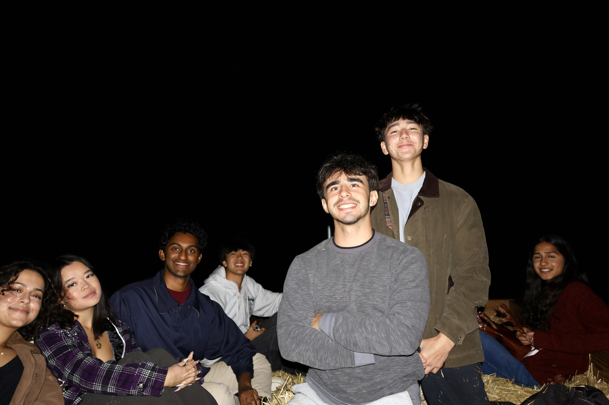

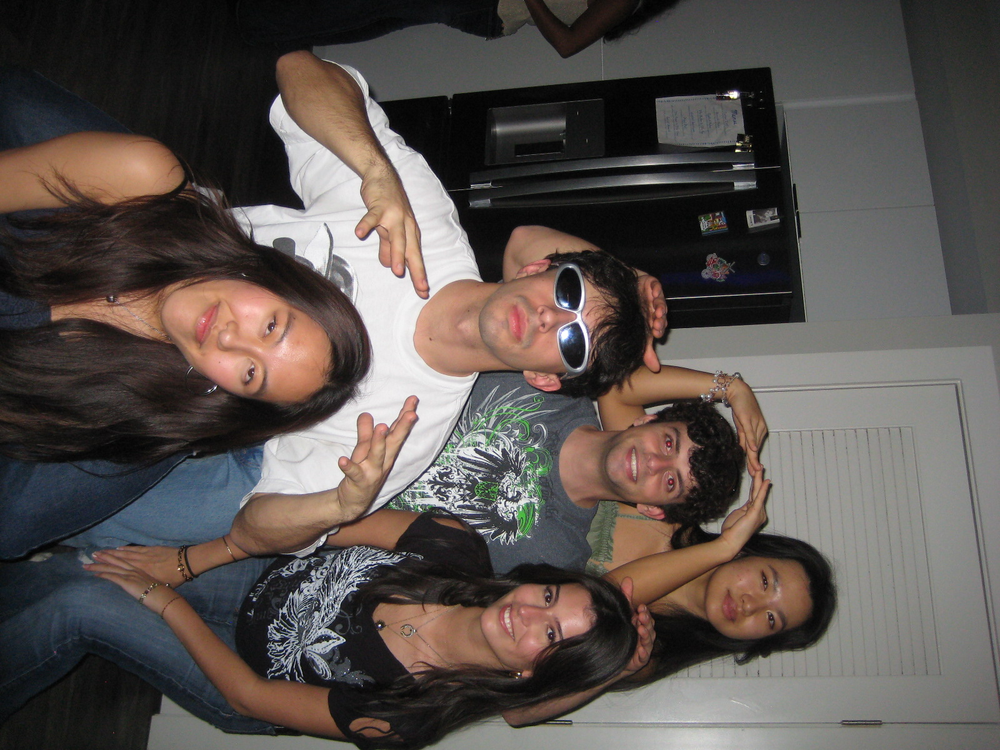

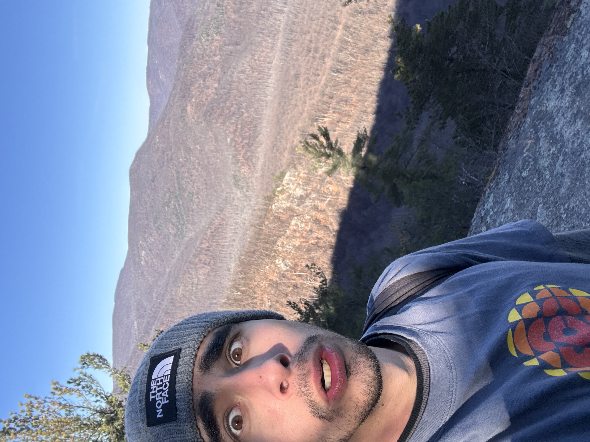
December: The Finale
And now to the present month. I just finished school like last thursday and only really came back yesterday so this is super fresh in my mind. What first comes to mind is how insanely busy it has been. I remember the first week of december was really rainy and trying to keep consistent with running (as consistent as 2-3x a week is lol) I made sure to keep going even when it was really cold and rainy. I also ran for VP of Finance for AKPsi and was lucky enough to win. While this will bring forth new responsibilities into the next calendar year, I am excited to be apart of Eboard and to help as best as I can in this new role. Another really fun thing this month was formal and it was much improved compared to last semester. But now to the hard part. The 2nd and 3rd week of december was probably the most locked in period of the whole semester. These two weeks I had my nightmare of a 364 project due (buzzer beater finish), 301 project (not bad), but then just like all my finals and doing basically half a semester’s worth of work for our SIF pitch all in like one day. I want to talk more about the SIF pitch. We pitched a really cool company and I did a lot of research for them throughout the semester. However, I didn’t work as much on the model as I should have been and I could’ve been more proactive in asking for help with our PM for the revenue projections as that was basically the biggest bottleneck. Well anyways, I ended up working on the model and pitch report from 10 AM friday to 5 AM saturday with our pitch being at like 11 AM that same saturday. It was super stressful as there were times I didn’t think I could do it and honestly, I was really scared of making a fool of myself. I really care about the work I do at SIF and was disappointed that I waited so long to do a bulk of the work. I also found out at like 1 AM that we were going to be one of the groups who presented in front of the dean. That actually had me geeked. We didn’t even have our model balanced and you want me to present in from of the dean. I really texted our president like u gotta change this but looking back I really appreciated his response. I respect aayush a lot and he was honestly a great pres. He basically told me like just keep working, don’t overcomplicate it, and make sure by the time of presentation you have your model and report finished. There was no sugarcoating anything and no entertaining of my complaints. At the end of the day we got it done and had honestly a really good pitch in front of the dean. I answered all the follow-up questions well and I was really proud of my work. All I think about it now was imagine how much better we could have done if we stuck to a better schedule. While everyone always says “this is just how these things are” I don’t think it has to be this way. Best believe next semester my pitch will be even better with more detail and presented better. I’m excited for what’s to come. Oh also i crashed the veo doing a jump off the curb and snapped the wheel off. While it was hilarious at the time and me and ben had a good laugh, I lowkey hurt my shoulder… But it’s chill im doing little stretches and strengthening exercises so I think it’ll heal up. Oh and I really enjoyed our like last get together with my PC (and eric) before everyone left home. Those boozy shakes were buns but great times. Also realized I didn’t talk about him yet but shout out hashem for being the goat. I’m glad we got closer this semester and that we are going to be roommates next year. Ok here are the pics:
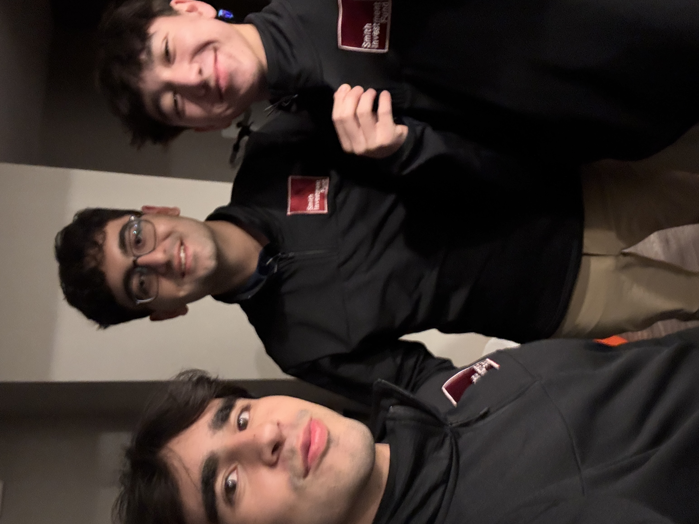
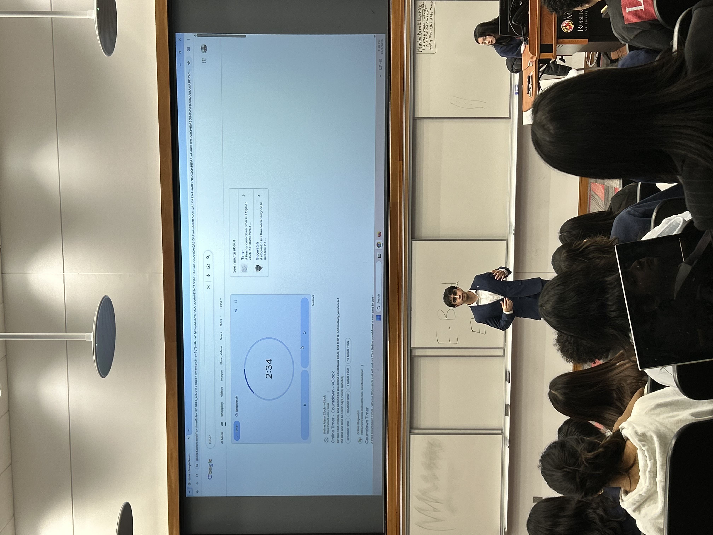
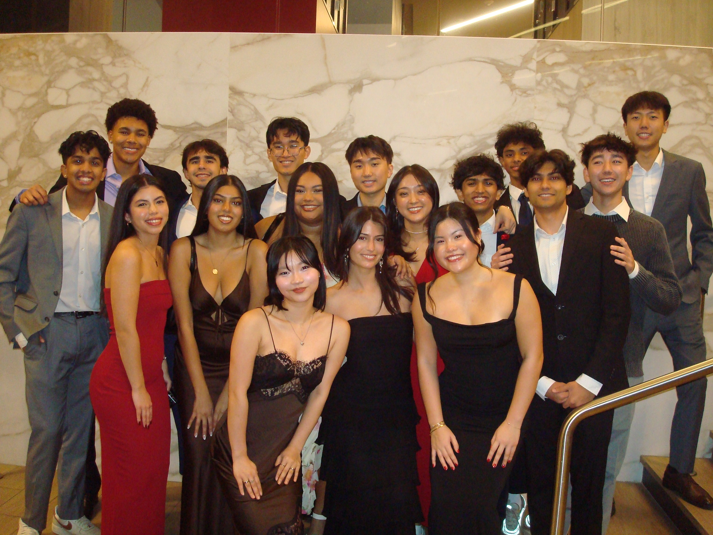
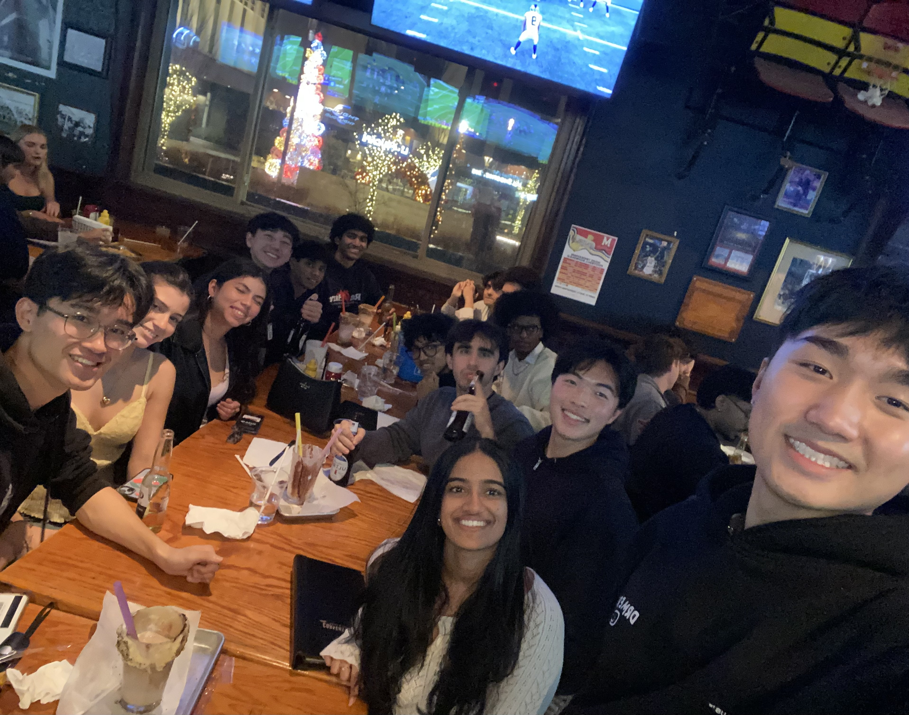